ПРОВЕРОЧНАЯ РАБОТА №1
ВАРИАНТ 1
1. Единый для всей страны срок перехода крестьян (неделя до Юрьева дня и неделя после) был введён:
1) по Правде Ярослава
2) по Уставу Владимира Всеволодовича
3) по Судебнику Ивана III
4) по Правде Ярославичей
2. Установите соответствие между событиями и годами.
СОБЫТИЯ
1) захват Киева Юрием Долгоруким
2) заключение Флорентийской унии
3) разгром печенегов под Киевом
ГОДЫ
A) 1036 г.
Б) 1155 г.
B) 1325 г.
Г) 1439 г.
Запишите буквы, соответствующие выбранным ответам.
3. Прочитайте отрывок из сочинения историка и укажите великого князя, о котором идёт речь.
Пользуясь случившимся в Твери убийством ордынского посла Чолхана (Щелкана), этот князь поспешил в Орду, возвратился с 50 000 человек ордынского войска и опустошил огнём и мечом всю Тверскую землю. В следующем году он получил от хана ярлык на великое княжение.
1) Даниил Александрович
2) Юрий Данилович
3) Иван Калита
4) Дмитрий Донской
4. Установите соответствие между событиями и участниками этих событий.
СОБЫТИЯ
1) битва на р. Калке
2) разгром Хазарского каганата
3) битва на р. Шелони
УЧАСТНИКИ
A) князь Святослав Игоревич
Б) Даниил Холмский
B) князь Даниил Романович
Г) Евпатий Коловрат
Запишите буквы, соответствующие выбранным ответам.
5. Что было одной из причин раздробленности Древнерусского государства?
1) «оседание» княжеской дружины на землю
2) призвание варягов
3) нашествие немецких рыцарей на Русь
4) Батыево нашествие на Русь
6. Какое из перечисленных литературных произведений было создано раньше остальных?
1) «Задонщина»
2) «Повесть о разорении Рязани Батыем»
3) «Слово о полку Игореве»
4) «Житие Сергия Радонежского»
7. Рассмотрите изображение и укажите, какие суждения о данном изображении являются верными.
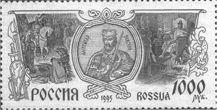
1) Данная марка выпущена к 600-летию со дня смерти изображённого на ней князя.
2) Изображение в левой части марки символизирует результаты Ледового побоища.
3) Князь, изображённый на марке, участвовал в битве на р. Сити.
4) Князь, изображённый на марке, подавил выступления новгородцев против переписи населения монголами.
5) Князь, изображённый на марке, был дядей родоначальника московской княжеской династии.
Выберите несколько правильных ответов.
8. Расположите исторические события в хронологической последовательности.
A) создание Правды Ярослава
Б) смерть Мстислава Великого
B) битва на р. Боже
Запишите получившуюся последовательность букв.
9. Перед вами четыре предложения. Два из них являются положениями, которые требуется аргументировать. Другие два содержат факты, которые могут послужить аргументами для этих положений.
1) Крещение Руси способствовало развитию грамотности.
2) Материалом для письма служила специально выделанная телячья кожа.
3) На Русь приезжали переводчики церковных книг из Византии, Болгарии.
4) Первые русские книги были очень дорогими.
Подберите для каждого положения соответствующий факт. Номера соответствующих предложений запишите в таблицу.
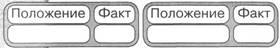
10. Прочитайте текст, в котором каждое предложение пронумеровано. Данный текст содержит две ошибки. Фрагменты текста, в которых, возможно, сделаны ошибки, подчёркнуты и выделены полужирным шрифтом.
1) Своего расцвета Литовское государство достигло при князе Гедимине.
(2) При нём столицей государства стал основанный им город Вильно.
(3) Гедимин, оставаясь язычником, не ущемлял права православной церкви.
(4) После смерти Гедимина Литовским государством правил его сын Ольгерд.
(5) Во время княжения Ольгерда к Литовскому государству были присоединены Полоцкая. Витебская. Минская и Брестская земли. (6) После смерти Ольгерда в 1377 г. в Литовском княжестве начались новые усобицы, в результате которых у власти оказались сын Ольгерда Казимир и племянник Витовт.
Рассмотрите схему и выполните задания 11-13.
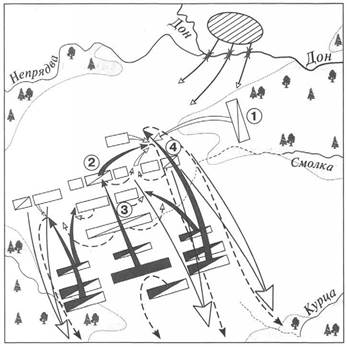
11. Укажите год, когда произошли события, которым посвящена данная схема.
1) 1240 г.
2) 1380 г.
3) 1410 г.
4) 1480 г.
12. Какой цифрой обозначен на схеме полк, одним из командиров которого был Владимир Андреевич Серпуховской?
13. Напишите имя командующего войсками противника русских войск в данной битве.
Ответ:
14. Запишите термин, о котором идёт речь.
Земельное владение, даваемое за военную или государственную службу без права продажи, обмена, наследования.
Ответ:
15. Укажите слово, пропущенное в данной схеме.
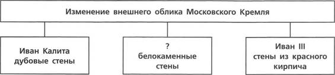
Ответ:
ЗАПОЛНИТЕ ТАБЛИЦУ ОТВЕТОВ
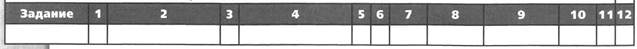
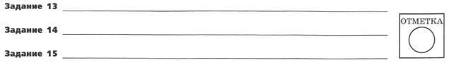
ВАРИАНТ 2
1. Служилые люди, получавшие в пользование землю на условиях несения государственной службы, — это:
1) бояре
2) закупы
3) смерды
4) помещики
2. Установите соответствие между событиями и годами.
СОБЫТИЯ
1) Грюнвальдская битва
2) антиордынское восстание в Твери
3) съезд князей в Любече
ГОДЫ
A) 1054 г.
Б) 1097 г.
B) 1327 г.
Г) 1410 г.
Запишите буквы, соответствующие выбранным ответам.
3. Прочитайте отрывок из сочинения историка и укажите имя, пропущенное в тексте.
Из таких изгнанников особенно заметен в это время был хан ____. Разорив русские волости по Оке, он пошёл на Волгу и устроил себе город Казань на р. Казанке, близ впадения её в Волгу. Основав там особое Казанское царство, он оттуда начал громить Русь, доходя в своих набегах до самой Москвы. Великий князь Василий Васильевич вышел против него, но под Суздалем был разбит и взят в плен.
1) Едигей
2) Улу-Мухаммед
3) Менгли-Гирей
4) Тимур
4. Установите соответствие между событиями и участниками этих событий.
СОБЫТИЯ
1) битва на р. Ведроши
2) Невская битва
3) неудачный поход на Византию
УЧАСТНИКИ
A) киевский князь Игорь
Б) Даниил Щеня
B) Андрей Боголюбский
Г) Таврило Олексич
Запишите буквы, соответствующие выбранным ответам.
5. Что стало одним из последствий Крещения Руси?
1) появление на Руси первых христиан
2) укрепление культурных связей с Византией
3) политическая раздробленность Руси
4) появление славянской азбуки
6. Какое из перечисленных литературных произведений было создано раньше остальных?
1) «Слово о полку Игореве»
2) «Слово о законе и благодати»
3) «Моление Даниила Заточника»
4) «Житие Михаила Тверского»
7. Рассмотрите изображение и укажите, какие суждения о данном изображении являются верными.
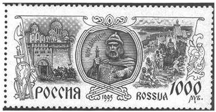
1) Данная марка выпущена к 600-летию со дня смерти изображённого на ней князя.
2) По приказу князя, изображённого на марке, в Москве была построена деревянная крепость.
3) Князь, изображённый на марке, умер в Киеве.
4) Князь, изображённый на марке, является родоначальником династии московских князей.
5) Князь, изображённый на марке, был сыном Ярослава Мудрого.
Выберите несколько правильных ответов.
8. Расположите исторические события в хронологической последовательности.
A) присоединение Новгородской земли к Московскому государству
Б) битва на р. Калке
B) разорение Москвы ханом Тохтамышем
Запишите получившуюся последовательность букв.
9. Перед вами четыре предложения. Два из них являются положениями, которые требуется аргументировать. Другие два содержат факты, которые могут послужить аргументами для этих положений.
1) На славян оказали влияние ираноязычные племена (скифы, сарматы).
2) На славян повлияло соседство с финно-угорскими племенами.
3) В славянский язык вошли и сохранились такие слова, как «хата», «собака», «топор».
4) В славянском языке закрепились названия: Ухта, Вологда, Вычегда, Кинешма, Клязьма, Селигер, Ильмень.
Подберите для каждого положения соответствующий факт. Номера соответствующих предложений запишите в таблицу.
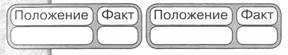
10. Прочитайте текст, в котором каждое предложение пронумеровано. Данный текст содержит две ошибки. Фрагменты текста, в которых, возможно, сделаны ошибки, подчёркнуты и выделены полужирным шрифтом.
(1) В 1359 г. на московский престол взошел девятилетний Дмитрий Иванович. (2) Главой московского правительства фактически стал митрополит Алексий. (3) И в этом же году Золотая Орда распалась на две части, границей между которыми стала Волга. (4) В западной части Золотой Орды верх взял темник Мамай, который не был потомком Чингисхана, а потому не мог претендовать на ханский трон. (5) В 1368 г. литовский князь Гедимин повёл на Москву сильную литовско-русскую рать, в составе которой были и полоцкие полки. (6) Новый дубовый Кремль выдержал осаду неприятеля, и раздосадованный литовский князь разгромил и пожёг московский посад.
11. Укажите год, когда произошло событие, которому посвящена схема.
1) 1240 г.
2) 1242 г.
3) 1380 г.
4) 1480 г.
12. Каким знаком на схеме обозначены тяжеловооружённые рыцари противника русских войск?
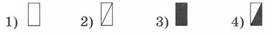
13. Укажите название озера, обозначенного на схеме.
Ответ:
Рассмотрите схему и выполните задания 11-13.
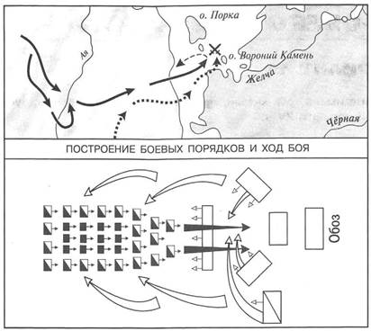
Запишите термин, о котором идёт речь.
14. Название различных поселений, население которых временно освобождалось от государственных повинностей.
Ответ:
15. Укажите словосочетание, пропущенное в данной схеме.
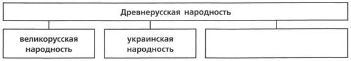
Ответ:
ЗАПОЛНИТЕ ТАБЛИЦУ ОТВЕТОВ
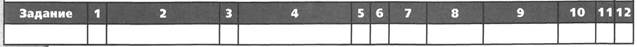
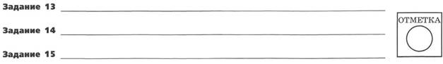
ПРОВЕРОЧНАЯ РАБОТА №2
ВАРИАНТ 1
1. Укажите имена трёх князей, принимавших участие в междоусобной войне второй четверти XV в.
2. Существует точка зрения, что политическая раздробленность Руси имела не только отрицательные, но и положительные последствия. Приведите два аргумента в подтверждение данной точки зрения.
3. Прочитайте отрывок из летописи и выполните задания.
Пришли Святополк, и Владимир, и Давыд Игоревич, и Василько Ростиславич, и Давыд Святославич, и брат его Олег... и говорили друг другу: «Зачем губим Русскую землю, сами между собой устраивая распри? А половцы землю нашу несут розно и рады, что между нами идут войны. Да отныне объединимся единым сердцем и будем блюсти Русскую землю, и пусть каждый владеет отчиной своей: Святополк — Киевом, Изяславовой отчиной, Владимир — Всеволодовой, Давыд, и Олег, и Ярослав — Святославовой, и те, кому Всеволод роздал города: Давыду — Владимир, Ростиславичам же: Володарю — Перемышль, Васильку — Теребовль».
Назовите событие, о котором идёт речь в данном отрывке. Укажите год, когда оно произошло.
Укажите два решения, принятые в ходе описываемого события.
Назовите инициатора проведения описываемого события. Укажите один факт, указывающий на его стремление выполнить принятые решения. Укажите его вклад в развитие древнерусского законодательства.
4. Сравните Древнерусское государство в XI в. и Московское государство в начале XVI в. по линиям, указанным в таблице. На основании сравнения сделайте вывод.
|
Линии сравнения |
Древнерусское государство в XI в. |
Московское государство в начале XVI в. |
|
Существование зависимости от других государств |
||
|
Наличие общегосударственного свода законов |
||
|
Принцип передачи власти князьями |
||
|
Кто составлял основу войска? |
Вывод:
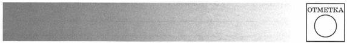
ВАРИАНТ 2
1. Укажите имена киевских князей, правивших Древнерусским государством в X, XI и XII вв. (по одному имени для каждого века).
X в. — ________
XI в. — ________
XII в. — ________
2. Существует точка зрения, что Русская православная церковь сыграла значительную роль в усилении Московского княжества. Приведите два аргумента в подтверждение данной точки зрения.
3. Прочитайте отрывок из сочинения историка и выполните задания.
Новгородцы бодро вышли навстречу, но на берегах Шелони потерпели поражение от передовой московской рати, которою начальствовал князь Даниил Холмский. При встрече с москвитянами конный архиепископский полк отказался от битвы по тайному наказу архиепископа Феофила. Вообще разбогатевшие новгородские граждане не отличались уже ратным духом и не могли устоять в открытом поле против опытных в военном деле московских и монгольских отрядов. В числе шелонских пленников находился один из сыновей Марфы Борецкой, которого Иоанн велел казнить вместе с тремя другими боярами. Между тем ____ не присылал никакой помощи, в самом Новгороде поднялась партия московских приверженцев и стала одолевать враждебную ей сторону Борецких.
Укажите год, когда произошли описываемые события. Укажите короля, имя которого пропущено в тексте. ____
Каковы, по мнению автора, причины поражения новгородского войска в упомянутой в отрывке битве? Укажите две причины.
Укажите название формы правления в Новгороде в период описываемых событий. В чём проявлялось её существование в Новгороде? Укажите любые два проявления.
4. Сравните Куликовскую битву и Стояние на Угре по линиям, указанным в таблице. На основании сравнения сделайте вывод.
|
Линии сравнения |
Куликовская битва |
Стояние на Угре |
|
Кто был противником? |
||
|
Каковы были потери русских войск? |
||
|
Кто победил? |
||
|
Значение события |
Вывод:
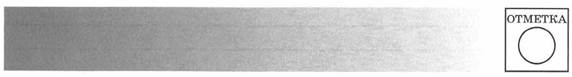
ТВОРЧЕСКИЕ ЗАДАНИЯ
Напишите небольшое историческое сочинение, в котором будут использованы все элементы из приведённого списка. При написании сочинения продемонстрируйте на фактическом материале ваше знание истории по соответствующей эпохе (периоду, событию, явлению, процессу).
Глава 2. Русь в IX — первой половине XII в.
1) Любечский съезд; 2) вече; 3) Святополк Изяславич; 4) монастыри; 5) Устав Владимира Всеволодовича; 6) ростовщики.
Глава 3. Русь в середине XII — начале XIII в.
1) Юрий Долгорукий; 2) икона Божьей Матери; 3) заговор; 4) Боголюбово; 5) памятники архитектуры; 6) Киев.
Глава 4. Русские земли в середине XIII—XIV в.
1) Ярлык; 2) Даниил Романович; 3) численники; 4) агрессия с Запада 5) Александр Невский; б) изменение характера княжеской власти.
Глава 5. Формирование единого Русского государства
1) Традиции старшинства; 2) опекун малолетнего Василия II; 3) Дмитрий Шемяка; 4) отсутствие поддержки московских бояр; 5) смерть Юрия Дмитриевича; 6) смерть Витовта.